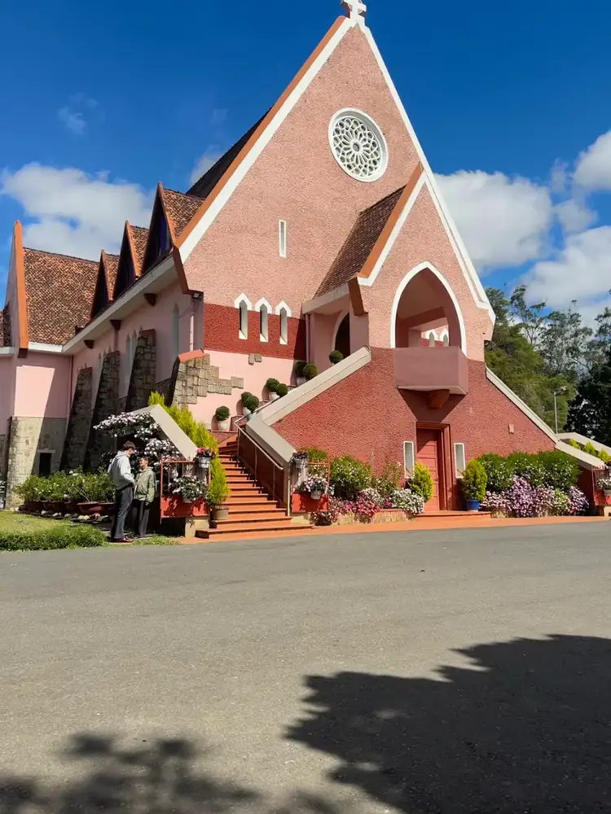
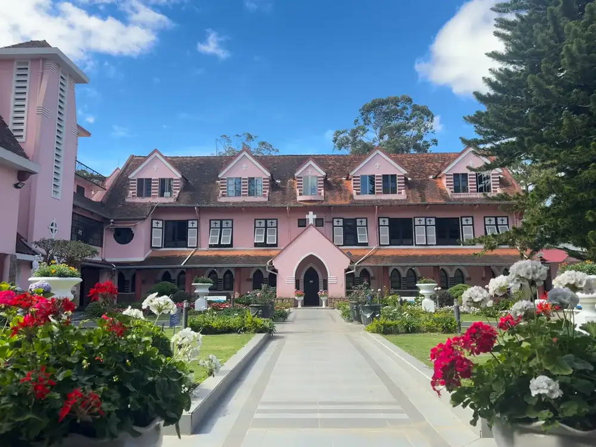
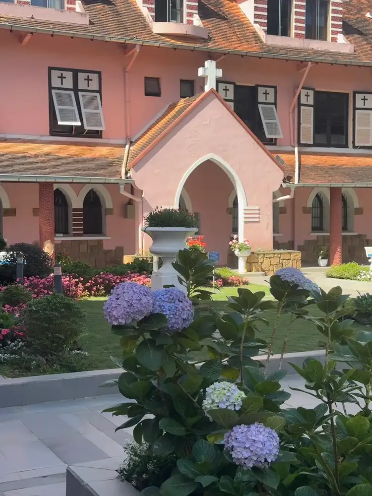

အချက်အလက် အကျဉ်း
- လိပ်စာ: 1 Ngo Quyen, Da Lat — ဈေး၏ အနောက်ဘက်ရှိ တောင်ကုန်းငယ်ပေါ်တွင်
- နေ့တိုင်း 7:30–11:30 နှင့် 13:30–17:30 ဖွင့်သည် (Google Maps, 2026 အောက်တိုဘာ); ဝတ်ပြုချိန်တွင် လည်ပတ်ကြည့်ရှုခြင်း ပိတ်သည်
- ဝင်ကြေး: အခမဲ့
- ဒါလတ်ဈေးမှ ခန့်မှန်း 1 ကီလိုမီတာ၊ Xuan Huong ကန်မှ 1.6 ကီလိုမီတာ (မျဉ်းဖြောင့်) — ကျွန်ုပ်တို့ဆိုင်မှ 1 ကီလိုမီတာ အောက်
- ဝတ်စားဆင်ယင်မှု: ဘုရားကျောင်းထဲဝင်ရန် ပခုံးနှင့် ဒူးကို ဖုံးပါ
- စကူတာဖြင့်: လျှပ်စစ်ဆိုင်ကယ် အပါအဝင် မည်သည့်ဆိုင်ကယ်ဖြင့်မဆို လွယ်ကူသည်

ဖွင့်ချိန်နှင့် ဝတ်ပြုချိန်
အထက်ပါ အချိန်များအတွင်း ဝင်းအတွင်း လှည့်လည်ကြည့်ရှုနိုင်သည်။ ဘုရားကျောင်းသည် အသုံးပြုနေဆဲ ဝတ်ပြုရာနေရာ ဖြစ်သည်: ဝတ်ပြုချိန်တွင် လည်ပတ်ကြည့်ရှုခြင်း ပိတ်ပြီး တနင်္ဂနွေမနက် အစည်ကားဆုံး ဖြစ်သည်။ ဝတ်ပြုချိန်များ ရံဖန်ရံခါ ပြောင်းလဲသဖြင့် ဂိတ်ရှိ ကြေညာသင်ပုန်းကို စစ်ဆေးပါ။
ဝင်ကြေးနှင့် ပါကင်
ဝင်ကြေး အခမဲ့ဖြစ်သည်။ နေရာတွင် ဆိုင်ကယ်ပါကင် ရှိသည် — ဝန်ထမ်းများ၏ လမ်းညွှန်မှုကို လိုက်နာပြီး ဆိုင်ကယ်ကို သော့ခတ်ပါ။
ဆိုင်ကယ်ဖြင့် သွားနည်း
ဒါလတ်ဈေးမှ ခန့်မှန်း 1 ကီလိုမီတာသာ ဝေးသည် — စကူတာဖြင့် ခန့်မှန်း 5 မိနစ်။ Google Maps တွင် "Domaine de Marie" သို့မဟုတ် "1 Ngo Quyen" ဟု ရှာပါ။ ဘုရားကျောင်းသည် တောင်ကုန်းငယ်ပေါ်တွင် ရှိသဖြင့် နောက်ဆုံးအပိုင်းသည် ညင်သာစွာ တက်သည်: လျှပ်စစ်ဆိုင်ကယ်ဖြင့် အဆင်ပြေသည် (2 ယောက်၊ စုစုပေါင်း 100 kg အောက်)၊ Honda Vision 110cc သို့မဟုတ် Air Blade 125cc ဖြင့် လွယ်ကူသည်။
သမိုင်းအကျဉ်း
1940 တွင် စတင်တည်ဆောက်ပြီး 1942 တွင် ဖွင့်လှစ်ခဲ့သည်။ ၎င်းသည် Saint Vincent de Paul ၏ Daughters of Charity ကက်သလစ် အဖွဲ့အစည်းပိုင်ဖြစ်ပြီး ၎င်းတို့၏ သီလရှင်များ ကျောင်းတိုက်တွင် ယခုထိ နေထိုင်ကြသည်။ 3 မီတာမြင့်သော မယ်တော်မာရီ ရုပ်တုကို 1943 တွင် ပြင်သစ်ဗိသုကာ Jonchère က ဒီဇိုင်းဆွဲခဲ့ပြီး ပြင်သစ် အင်ဒိုချိုင်းနား ဘုရင်ခံချုပ်၏ ဇနီး Suzanne Decoux က လှူဒါန်းခဲ့သည်; သူမ 1944 တွင် ကွယ်လွန်ခဲ့ပြီး သူမ၏ အုတ်ဂူသည် ဘုရားကျောင်းနောက်ဘက်တွင် ရှိသည်။
ဗိသုကာ
Domaine de Marie သည် ပြင်သစ် ဘုရားကျောင်းဗိသုကာကို ဗီယက်နမ်လက္ခဏာများနှင့် ပေါင်းစပ်ထားသည်။ ပန်းရောင်နံရံများတွင် ကြမ်းတမ်းသော အသားအရေ ရှိသည်; ရှေ့မျက်နှာစာသည် လက်ဝါးကပ်တိုင် ထိပ်ဆောင်းထားသော တြိဂံမြင့်ဖြစ်ပြီး အဝိုင်းနှင်းဆီပြတင်းနှင့် ထိပ်ချွန်ခုံးပြတင်းငယ်တန်းများ ရှိသည်။ အမိုးများသည် အလယ်ပိုင်း ကုန်းမြင့်ဒေသ၏ အများသုံး ကွပ်ပျစ်အိမ် nhà rông ကို ပုံဖော်ထားသည်။ အတွင်းတွင် သစ်သားရက်မ မျက်နှာကြက်၊ ဆေးရောင်ဖန်ပြတင်းနှင့် ဗီယက်နမ်ဆန်သော မျက်နှာရှိသည့် ကမ္ဘာလုံးပေါ်တွင် ရပ်နေသော မယ်တော်မာရီ ရုပ်တုကို ရှာကြည့်ပါ။

အကောင်းဆုံး ဓာတ်ပုံနေရာများ
- ရှေ့လှေကားကို အောက်မှ — ကောင်းကင်ပြာနောက်ခံ တြိဂံမျက်နှာစာ; နေရောင်က ရှေ့ဘက်ကို ထိုးသော မနက်ပိုင်း အကောင်းဆုံး။
- နှင်းဆီပြတင်းနှင့် ခုံးဝရန်တာ — နောက်ဆုတ်ပြီး ဇူးမ်ဆွဲပါ။
- ကျောင်းတိုက်ဝင်း — ပန်းအိုးများ စီတန်းထားသော လမ်းဖြောင့်။
- ခုံးတန်းလမ်း — ကျောင်းတိုက်တစ်လျှောက် ထိပ်ချွန်ခုံးများနှင့် ကျောက်နီတိုင်များ။
- ကျောင်းတိုက် ဆင်ဝင်ရှေ့ရှိ ဟိုက်ဒရင်ဂျာပန်းများနှင့် အဖြူရောင် အိုးများ။

လေးစားမှု ပြပါ
ဤနေရာသည် ဆုတောင်းရာနေရာဖြစ်ပြီး သီလရှင်များ၏ နေအိမ် ဖြစ်သည်။ တိုးတိုးပြောပါ၊ ပန်းမခူးပါနှင့်၊ မြက်ခင်းပေါ် မလျှောက်ပါနှင့် (ဆိုင်းဘုတ်များက တောင်းဆိုထားသည်)၊ မင်္ဂလာဆောင် ဓာတ်ပုံရိုက်ခြင်း သို့မဟုတ် ဒရုန်းလွှတ်ခြင်း မပြုမီ ခွင့်တောင်းပါ။
အနီးအနား: အေးဆေးသော နေ့တစ်ဝက်
မနက်ပိုင်း Domaine de Marie → Van Thanh ပန်းရွာ (ခန့်မှန်း 2 ကီလိုမီတာ) → ကြက်ဖ ဘုရားကျောင်း၊ ဒါလတ် ကက်သီဒရယ် (ခန့်မှန်း 2 ကီလိုမီတာ) → ဒါလတ်ဈေးနားတွင် နေ့လယ်စာ။ နေရာ 16 ခုလုံးကို ကျွန်ုပ်တို့၏ ဒါလတ် ဓာတ်ပုံနေရာ မြေပုံတွင် ကြည့်ပါ။
မေးလေ့ရှိသော မေးခွန်းများ
Domaine de Marie ကို အခမဲ့ ဝင်ရပါသလား?
ဟုတ်ကဲ့၊ ဝင်ကြေး အခမဲ့ဖြစ်သည်။
Domaine de Marie ဘယ်အချိန် ဖွင့်သလဲ?
များသောအားဖြင့် နေ့တိုင်း 7:30–11:30 နှင့် 13:30–17:30 (Google Maps, 2026 အောက်တိုဘာ)။ ဝတ်ပြုချိန်တွင် လည်ပတ်ကြည့်ရှုခြင်း ပိတ်သည်။
Domaine de Marie ကို ဘယ်တုန်းက ဆောက်ခဲ့သလဲ?
1940 တွင် စတင်တည်ဆောက်ခဲ့ပြီး 1942 တွင် ဖွင့်လှစ်ခဲ့သည်။
ဝတ်စားဆင်ယင်မှု စည်းကမ်း ရှိပါသလား?
ရှိသည် — ဘုရားကျောင်းထဲ ဝင်ရန် ပခုံးနှင့် ဒူးကို ဖုံးပါ။
လျှပ်စစ်ဆိုင်ကယ်ဖြင့် သွားလို့ရပါသလား?
ရပါသည်။ ဈေးမှ ခန့်မှန်း 1 ကီလိုမီတာ ဝေးပြီး နောက်ဆုံးအပိုင်းသည် ညင်သာသော အတက် ဖြစ်သည်။
သွားရန် စကူတာငှားခြင်း
ကျွန်ုပ်တို့ဆိုင်သည် Domaine de Marie မှ 1 ကီလိုမီတာ အောက်တွင် ရှိသည်။ ဆိုင်ကယ်တိုင်း — Honda Vision 110cc, Honda Air Blade 125cc နှင့် လျှပ်စစ်ဆိုင်ကယ် — တစ်ရက်လျှင် 150,000 VND၊ ငွေသားအာမခံ မလို (နိုင်ငံကူးလက်မှတ် သို့မဟုတ် မှတ်ပုံတင်ကတ် ထားခဲ့ပါ)၊ ဦးထုပ်နှင့် ဖုန်းကိုင် အခမဲ့။ စျေးနှုန်းနှင့် ဘိုကင်: ဒါလတ်မှာ ဆိုင်ကယ်ငှား။
မေးလေ့ရှိသော မေးခွန်းများ
Domaine de Marie ဘယ်အချိန် ဖွင့်သလဲ?
များသောအားဖြင့် နေ့တိုင်း 7:30–11:30 နှင့် 13:30–17:30 (Google Maps, 2026 အောက်တိုဘာ); ဝတ်ပြုချိန်တွင် လည်ပတ်ကြည့်ရှုခြင်း ပိတ်သည်။
ဝင်ကြေး ပေးရသလား?
မပေးရပါ၊ ဝင်ကြေး အခမဲ့ဖြစ်သည်။
လျှပ်စစ်ဆိုင်ကယ်ဖြင့် သွားလို့ရသလား?
ရပါသည် — ဒါလတ်ဈေးမှ ခန့်မှန်း 1 ကီလိုမီတာ၊ နောက်ဆုံးအပိုင်း ညင်သာသော အတက်။
ဒါလတ်အကြောင်း မေးစရာရှိပါသလား?
လမ်းကြောင်း၊ ရာသီဥတုနှင့် ဆိုင်ကယ်ဘိုကင်အတွက် ကူညီပေးပါမည် — WhatsApp ဖြင့် စာပို့လိုက်ရုံသာ။
WhatsApp ဖြင့် စာပို့ရန်ဒါလတ်မှာ ဆိုင်ကယ်ငှားပါ
Honda Vision, Honda Air Blade 125cc နှင့် လျှပ်စစ်ဆိုင်ကယ် — တစ်ရက်လျှင် 150,000 VND၊ ငွေသားအာမခံ မလို၊ ဦးထုပ် အခမဲ့၊ 2 ရက်နှင့်အထက် ငှားလျှင် ဟိုတယ်အထိ ပို့ပေးသည်။